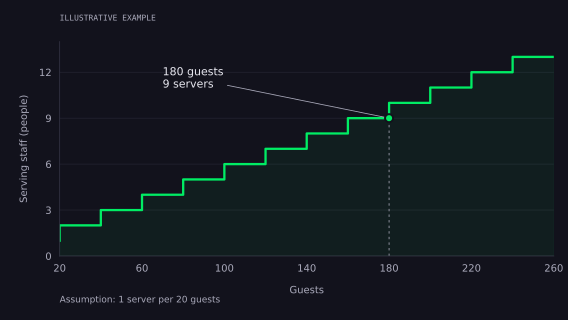
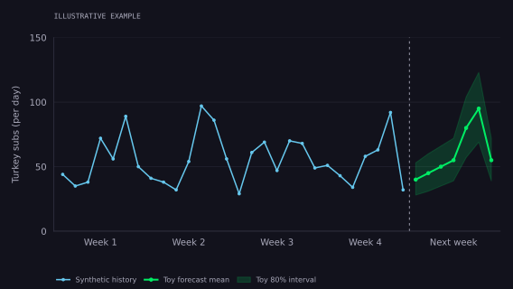
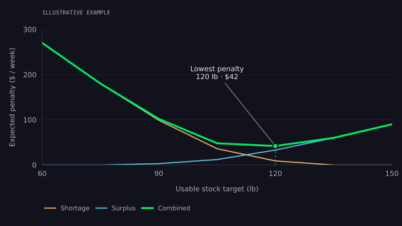

Applied AI · Predictive modeling · Software design
Machine Learning or a Calculator?
A banquet for 180 guests and a sub shop’s weekly turkey order reveal when to calculate, when to forecast, and how to combine the two.
You have a banquet for 180 people next Saturday. How many servers do you need?
You run an independent sub shop. How many pounds of turkey should you have available next week?
Both questions ask for a number. Both affect staffing, purchasing, and customer experience. They invite very different kinds of reasoning, though. In the banquet example, much of the workload is already specified. In the sub shop, the major unknown is what people will buy.
Before choosing a model, I want to separate three jobs: calculate a requirement, predict an unknown quantity, and decide what action to take. A useful system may do all three. Giving each job the right implementation is more valuable than making the entire workflow “AI-powered.”
Start with the banquet: a rule you can inspect
Suppose the operator has chosen a planning rule of one serving staff member per 20 guests for this particular service format. That is an illustrative assumption, not a universal hospitality standard. With 180 guests, the calculation is straightforward:
If the event also requires a dedicated captain who does not count toward serving capacity, add that separate role: nine servers plus one captain. Bartenders, kitchen staff, setup crews, and other responsibilities need their own rules. The calculator should make those boundaries visible.
The rounding matters. At this assumed ratio, 180 guests require nine servers; 181 require ten. A formula handles that boundary consistently. It can reject negative guest counts, require a service format, and show exactly which policy produced the answer.

Illustrative planning rule. The graph calculates serving staff only; it does not establish the correct ratio for a real event.
Inspect the calculation
For each guest count from 20 to 260, serving staff equals the guest count divided by 20, rounded upward. Download the example values.
There is still judgment inside this simple system. Plated dinner and buffet service may need different policies. Table layout, service timing, staff experience, and the operator’s service expectations can change the ratio. A deterministic calculator can accept those inputs without becoming a machine learning system.
The rule’s implementation can be correct while its assumptions are wrong. I would keep the policy explicit, version it, and compare planned staffing with actual service outcomes. If a chosen ratio repeatedly produces slow service, the first response is to investigate the ratio and the missing conditions.
Assigning specific people to shifts is another problem. Availability, skills, breaks, and required coverage can lead to a constraint solver or optimization model. Complex scheduling does not, by itself, require machine learning.
Deterministic execution and uncertain outcomes are different things
A deterministic program returns the same result for the same inputs and configuration. A trained regression model can do that too. “Uses machine learning” does not necessarily mean “returns something different every time.”
A probabilistic forecast represents uncertainty about an outcome: perhaps a distribution over daily demand or a range intended to cover future sales. A model that returns only one demand estimate is providing a point forecast, even if it was trained with machine learning.
The more useful architecture questions are: Do we already know the relationship we need to apply? Do we need to estimate that relationship from examples? And does the decision require an explicit representation of uncertainty? Those questions avoid treating deterministic software and statistical modeling as mutually exclusive categories.
The sub shop has an unknown input
For the sub shop, a recipe might specify four ounces of usable turkey per sandwich. Converting a sandwich count into pounds is arithmetic. The difficult input is how many turkey sandwiches customers will want on each day.
A busy Saturday, a quiet Monday, a promotion, and a nearby event can create different demand. The forecast should match the decision: demand by day and by product over the period the order needs to cover. A weekly total alone can hide a stockout on the busiest day.
Here is a fictional demand pattern with a busier weekend. The blue line shows four weeks of synthetic observations. The green line shows the next week’s assumed daily averages, with an illustrative prediction band. These figures come from a toy data-generating process; they are not a trained model’s results or a restaurant’s sales history.

All values are simulated. The band describes individual days under the toy assumptions; it is not a validated interval for a real shop or a weekly-total interval.
Inspect the example data
The daily means, Monday through Sunday, are 40, 45, 50, 55, 80, 95, and 55 sandwiches. Counts are generated from a negative-binomial distribution with dispersion parameter 25 and random seed 180. The band uses the 10th and 90th percentiles of 100,000 simulated draws per day. Download the values or inspect the chart source.
The seven illustrative daily means add up to 420 turkey subs. At four ounces each, that is 105 pounds of usable turkey: 420 × 4 ÷ 16. That conversion is deterministic. Its output inherits the uncertainty in the forecast supplied to it.
A prediction interval describes a range for a future observation. Over many comparable forecasts, a well-calibrated 80% interval should cover roughly 80% of outcomes. It is different from uncertainty about an estimated average. Forecasting: Principles and Practice explains that distinction between a point forecast and a distributional forecast.
Daily intervals also cannot simply be added to obtain a weekly interval with the same coverage. Errors across days may move together: an unexpectedly busy week can lift several days at once. The forecast needs to represent uncertainty at the horizon used for ordering.
The average forecast is not automatically the right stock target
Suppose the weekly average is 105 pounds. Should the shop stock exactly 105 pounds? That depends on what happens when demand is higher or lower.
Running short might lose sales or force an expensive emergency purchase. Ordering too much might leave product that cannot be used. Those consequences need explicit values or service targets. The demand forecast alone cannot decide which tradeoff the operator prefers.
The newsvendor model gives a useful starting point: choose a quantity before uncertain demand arrives, balancing the cost of having too little against the cost of having too much. Its simple, single-period assumptions need revisiting when inventory carries over, replenishment is possible, or multiple products share ingredients.
For a separate, deliberately small example, imagine five possible weekly demands: 75, 90, 105, 120, and 135 usable pounds, with probabilities of 10%, 20%, 40%, 20%, and 10%. The mean is 105 pounds. Assign an illustrative penalty of $6 per pound of unmet demand and $2 per pound left over. These are invented decision costs, not turkey prices.

Hypothetical single-period decision. The lowest combined penalty is $42 at 120 usable pounds. This graph is calculated from the stated scenarios, not fitted to sales data.
Inspect the assumptions and arithmetic
For each stock target Q and demand scenario D, shortage costs 6 × max(D − Q, 0); surplus costs 2 × max(Q − D, 0). Each scenario’s cost is weighted by its probability, then summed. This simplified example assumes surplus has no later use and ignores other costs. Demand scenarios · Calculated cost curves.
In this example, 120 usable pounds has the lowest expected penalty. The demand distribution has not changed. The action differs from the mean because shortage and surplus have different consequences. Changing those costs can change the decision without retraining a demand model.
Now convert the stock target into an order. Assume 18 usable pounds are on hand, another 12 usable pounds will arrive in time, and newly purchased turkey has a 90% usable yield. With ten-pound cases:
Every input here is hypothetical. Existing stock and incoming deliveries must be usable during the relevant demand window; product that expires beforehand cannot count. Case sizes, delivery timing, storage capacity, and purchasing permissions belong in the decision logic. A seven-day demand forecast does not imply buying or storing all seven days’ supply at once.
This is a useful division of responsibility: estimate demand, choose a stock target under an explicit policy, then calculate a feasible order. Adding an unexplained safety percentage after a risk-adjusted target can double-count the buffer.
Before learning from history, ask what the history measures
Historical sales are valuable, but they are not always historical demand. If the shop runs out of turkey at two in the afternoon, the register records what it sold before the stockout. It does not record every sandwich customers would have bought afterward.
A model trained naively on those sales can learn that a busy day has modest demand. The purchasing decision then keeps supply low, which keeps observed sales low. Record stockouts, closures, substitutions, promotions, operating hours, and recipe changes alongside transactions so the team can understand those gaps.
Feature timing matters too. A forecast made when an order is placed can use the weather forecast available then. It cannot use the weather that was eventually observed as though it were already known. The same distinction applies to late catering bookings, future sales, and revised event schedules.
The banquet has uncertainty of its own. Expected attendance, no-shows, service duration, or staff absence might deserve forecasts when they materially affect planning. But a confirmed guest count and an agreed staffing policy remain a calculation. I would add a learned component for the uncertain quantity that needs one, rather than replacing the entire staffing workflow.
A forecasting problem does not automatically need advanced ML
For a small shop, I would start by plotting demand and comparing simple baselines: the same weekday last week, an average of recent comparable weekdays, or a basic seasonal forecasting model. These methods establish what the data already makes easy. The simple forecasting methods in Forecasting: Principles and Practice are useful reference points.
Then investigate the remaining error. Does demand change systematically with promotions, local events, price, or other information available in advance? Are there enough representative observations to estimate those relationships? Is the improvement likely to affect the order, or would every candidate still round to the same number of cases?
Regression, gradient-boosted trees, or other learned approaches become useful experiments when they can capture patterns the baseline misses. “We have historical data” is a reason to examine it. It is not evidence that a more complex model will outperform a well-chosen simple forecast.
Google’s ML problem-framing guidance recommends defining the product goal and comparing against a non-ML approach. For the shop, the goal could be fewer avoidable stockouts at an acceptable waste level. That gives the team a better target than deploying a model for its own sake.
Make the more complex option earn its place
Evaluate forecasts in the order the business would have used them. Train on earlier observations, predict the next ordering window, and repeat as time advances. The time-series splitting approach helps preserve that ordering. The evaluation also needs the real lead time, forecast horizon, and feature availability; chronological rows alone do not prevent leakage.
For the shop, I would examine errors in sandwich counts or pounds, persistent over- or underprediction, performance by weekday, and failures around unusual events. For intervals, I would check both coverage and width. A very wide interval can cover many outcomes while offering little operational guidance.
Then compare decisions under the same inventory policy. Does the candidate reduce the simulated cost of shortages and surplus? Does it change how often emergency purchasing is needed? A replay on historical sales needs care where stockouts hid unmet demand. Offline results should lead to a controlled operational trial, with assumptions and overrides recorded.
Any improvement also has to justify data collection, monitoring, retraining, support, and failure recovery. If those costs exceed the value of better decisions, the simpler approach is a successful engineering choice.
Build the system around the boundary
A practical architecture can keep uncertain estimation in one component and explicit policy in another. That lets the forecasting method improve while the surrounding business rules remain inspectable.
- ObserveValidate the inputs
Sales, availability, recipes, event details, and what was known at decision time.
- EstimateForecast the unknown
Use a simple baseline or a learned model; represent uncertainty when it changes the decision.
- DecideApply an explicit policy
Translate demand into staffing or stock targets, with costs, constraints, and units checked.
- Act and learnExecute within authority
Approve the schedule or order, retain the evidence, and compare the outcome with the plan.
An LLM could provide a conversational interface: collect missing details, call the calculator or forecast service, and explain the returned result. The arithmetic should come from the calculator. Forecast values should come from the forecasting component. Purchasing should respect the workflow’s approval rules. Fluent language does not supply the missing evidence for any of those jobs.
The same separation appears in my Referral Intelligence work, where ranking rules and predictive modeling have different responsibilities, and in Fourth Down, where a future analyst should explain a model’s forecast rather than invent probabilities.
When choosing an approach, I would ask five questions:
- What is known? Identify inputs, units, and policies that can be calculated or checked directly.
- What is unknown? Name the quantity to predict and when the decision must be made.
- What evidence exists? Look for representative history, reliable labels, and information actually available at that time.
- What does an error cost? Separate the forecast from the policy that turns it into an action.
- Does added complexity improve the outcome? Compare against a baseline and include the cost of operating the system.
For a 180-person banquet, the answer may be a small, transparent calculator. For an independent sub shop, it may be a demand forecast connected to equally transparent ordering rules. Engineering judgment means recognizing where uncertainty lives and building only as much machinery as the decision requires.